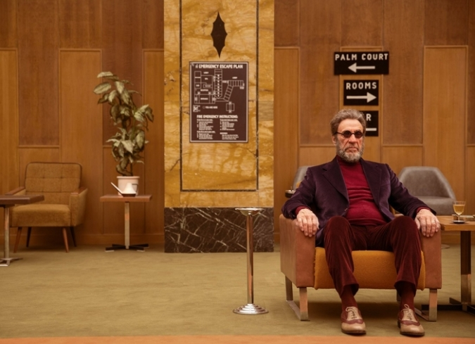

Conclusion
En conclusión, "El Gran Hotel Budapest" es una película que ha sido ampliamente elogiada por la crítica especializada y por el público en general. Su éxito se debe a la calidad de su dirección, guión, actuaciones y diseño de producción, así como a su humor ingenioso y emotividad. Además, la película tuvo una excelente recepción en todo el mundo, recaudando una cantidad significativa de dinero en taquilla y superando su presupuesto de producción. Su nominación y victoria en varios premios importantes, incluyendo los Oscar y los BAFTA, también demuestran su impacto en la industria del cine. En general, "El Gran Hotel Budapest" es una película que ha logrado cautivar a la audiencia y se ha convertido en un clásico contemporáneo del cine.